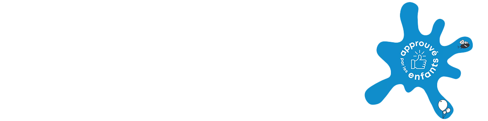

De Brusselse kunstenaar Michel Goyon presenteert verschillende van zijn werken in de Planetariumruimte van de tentoonstelling MUSEUM DER MUSEA. Zijn tekeningen, op het snijvlak van kunst en wetenschap, zitten vol symbolen, verborgen betekenissen, wiskundige verwijzingen... Hij zal met plezier enkele van deze mysteries ontrafelen tijdens ontmoetingen die gedurende de hele tentoonstelling worden georganiseerd. Mis deze gelegenheden om van te genieten van een gesprek met een boeiende kunstenaar niet.
Michel Goyon (Franstalig) is aanwezig voor informele gesprekken; u kunt op elk moment van de middag langskomen. Reserveren is niet nodig, de gebruikelijke tarieven zijn van toepassing.
Het Art et marges museum stemt zich deze zondag af op de
allerkleinsten en heeft voor hen een programma op maat in petto.
Luisteren naar natuurgeluiden/sensorisch tapijt/boetseren/spelen
met voorwerpen en textiel… alles is erop gericht om hun ervaring
met de kunstwerken in de mini-musea die deel uitmaken van de
tentoonstelling te verrijken.
Reserveren : sarah.kokot@artetmarges.be - 11.00-12.00 uur / 12.00-13.00 uur (geef bij het reserveren uw tijdslot aan en kom op het gewenste moment binnen dat tijdslot)
Voorzieningen: verschoontafel met wastafel, microwave en waterkoker om babyflesjes op te warmen, borstvoedingsruimte, pas schoongemaakte zalen (u bezoekt het museum op sokken – zorg voor antislip sokken voor de nog wankele beentjes)
Gebruikelijke museumtarieven , uitzondering: gratis toegang voor houders van de Pass Cultuur Marolles (geef dit aan bij uw reservering)
Wie komt er? De BABY POWER!-activiteiten vinden plaats met max. 2 volwassenen per kind. Mogelijkheid om vergezeld te worden door een oudere broer of zus (max. 1 kind ouder dan 3 jaar per gezin). Het museum is in de eerste plaats gereserveerd voor de allerkleinsten, andere bezoekers zijn welkom om de tentoonstelling te bezoeken, met inachtneming van de capaciteitsbeperking en de bijzonderheden van de dag.
De eerste zondag van de maand betekent gratis toegang tot het Art et marges-museum! Op deze eerste zondag van augustus bieden we u bovendien een rondleiding aan door de tentoonstelling MUSEUM DER MUSEA
In het frans. Op inschrijving
Wat zijn de pluspunten voor jonge bezoekers?
Tarieven, toegang, openingstijden
Andere kindvriendelijke adressen in de buurt van het museum:

Onze rondleidingen zijn geschikt voor alle doelgroepen vanaf 4 jaar (inclusief leerlingen Nederlands, alfabetisering, personen met een verstandelijke beperking, psychisch kwetsbaarheid). Laat ons bij het boeken weten wat de specifieke behoeften van je groep zijn.
De gids zal je begeleiden op een reis van reflectie en genot van deze buitengewone werken, die de diversiteit van creatieve vormen onthullen en alle artistieke gebieden verkennen (schilderkunst, beeldhouwkunst, assemblage, collage, muziek, dans, enz.)
Dankzij het Art et marges museum kan uw kind een originele verjaardag beleven! Op een speelse en toffe manier de kunstwerken van het museum ontdekken, met creatieve workshops op het programma.